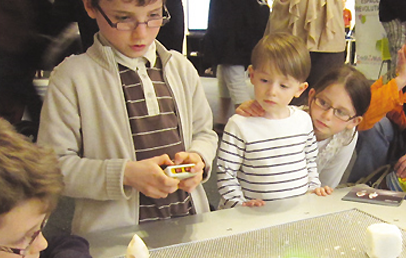
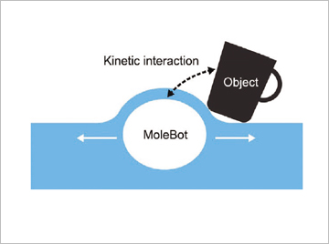
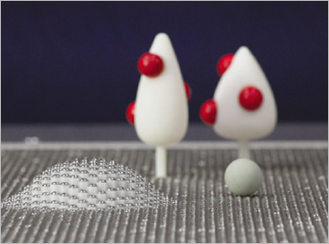

주제별 연구성과
주제별 연구성과
KAIST RESEARCH ACHIEVEMENTS
게임로봇 MoleBot의 탄생
산업디자인학과 이우훈
요약
유비쿼터스 컴퓨팅의 관점에서 볼 때 현재 데스크탑이나 노트북을 사용하여 수행하는 작업들은 먼 미래 대부분 일상적인 사물로도 더 편하게 할 수 있을 것이다. 이 때 우리 주변의 사물들은 컴퓨팅 파워와 사용자와 상호 작용을 위한 유기적인 유저 인터페이스(OUI)를 갖고 있을 것이다. 전통적인 GUI가 사각형의 평평한 스크린에 갇혀 있었다면 OUI는 일상 사물에 완전히 내장되어 비트(정보)와 아톰(물질)이 강하게 결합된 상태로 구현될 것이다. 따라서 OUI는 평 평하거나 고정적이지 않고 부드러우며 가변적인 형태가 될 것이다. 마치 서유기의 손오공이 사용하던 여의봉처럼 OUI는 사용자의 요구나 상호작용 시나리오에 따라 형태가 자유롭게 변할 수 있을 것이다.
연구내용

몰봇은 기존 OUI의 기술적인 제약을 극복하고 실용적인 응용을 제시한 선구적인 연구사례라고 할 수 있다. 몰봇을 기존의 형태가변형 OUI와 비교하면 수동적인 형상표시장치가 아니라 오히려 사용자나 사물과 물리적으로 상호작용하는 독립적인 에이전트에 가깝다고 할 수 있다. 몰봇 테이블은 15,000개의 물리적 픽셀을 갖고 있어 독특한 감각적 경험을 제공하고 유희적 상호작용을 가능하게 한다. 아이디어의 구현과정과 실증적 연구경험를 통해 우리는 근미래 몰봇의 개념이 인터랙티브 게임 테이블이나 역학적으로 정보를 제공해주는 테이블탑 인터페이스등으로 발전할 것으로 기대한다.
OUI는 아날로그의 물리적인 입력을 통해 그 형태가 수동적 또는 적극적으로 변하는 비평면적 디스플레이를 포함하는 새로운 유형의 유저 인터페이스이다. OUI에 대한 미래지향적인 비전과는 대조적으로 물리적 픽셀의 크기나 제한적인 표현가능성 때문에 형태가변형 OUI에 대한 연구의 수준은 아직 초보적인 상태이다. 우리는 연구를 통해 기존 OUI의 기술적인 제약을 극복하고 게임을 위한 실용적인 응용을 제시하고자 하였다. 전통적인 비디오 게임은 대부분 화면이라는 가상의 세계를 주시하며 정적인 자세로 컨텐츠를 즐기는 방식을 취한다. 우리는 OUI의 인터랙티브한 물리성이 사용자들로 하여금 게임에 더욱 적극적으로 몰입하게 하고 게임을 통해 신체적 움직임과 대인간의 사회적 상호작용을 촉진할 수 있다고 생각하였다.
강직하며 동시에 유연한 고해상도 구동픽셀 표면
Feelex, Lumen 그리고 Relief와 같은 OUI 형상표시장치에 관한 선행연구는 핀스크린의 원리를 이용하여 복잡한 구조로 수백 개의 핀을 개별적으로 구동하는 방식을 취했다. 하지만 몰봇의 구현을 위해 기존 형상표시장치에 비해 사물과의 물리적인 상호가능성이 풍부할 뿐만 아니라 좀 더 빠른 구동 속도, 높은 해상도, 작은 픽셀 사이즈 등의 조건을 동시에 만족시키는 새로운 메커니즘을 개발해야 했다. 그 결과 우리는 평면을 자유롭게 움직이는 2차원 캠 (일명 몰캠), 캠 팔로우어에 상응하는 15,000개의 서로 인접하는 정육각형 핀 그리고 몰캠과 핀 사이의 마찰을 줄이기 위한 스판덱스 천를 이용하여 물리적 변형가능성을 갖는 강직하며 동시에 유연한 표면을 개발하였다. 몰캠이 xy 평명상을 이동하면 육각형핀은 캠 팔로우어처럼 중력방향으로 선형운동을 만들어낸다. 결국 구동 xy 스테이지의 움직임이 몰캠으로 전달되고 또 다시 핀으로 전달되어 딱딱한 테이블 표면의 유기적인 물리적 변형을 가능하게 한다.
재구성 가능한 물리적인 게임 세계와 제스추어 기반 상호작용
 그림 2. 일반적인 형상표시장치
그림 2. 일반적인 형상표시장치
 그림 3. 구동픽셀 기반 로봇
 그림 4. 몰봇 테이블의 단면도
그림 4. 몰봇 테이블의 단면도
 그림 5. 물리적 상호작용 게임 'fruit picking'
연구비 지원
본 연구는 한국연구재단의 중견연구자지원시업의 지원을 받았음(과제번호: 327-2009-1-G00046)
연구실적
- Interacting with Computers OUI스폐셜이슈(2013년 3월) 논문게재
- SIGGRAPH 2011 Emerging Technologies 및Laval Virtual 2012 전시(http://vimeo.com/24155036)
- Laval Virtual Award 대상 수상
- 국내특허출원 1건